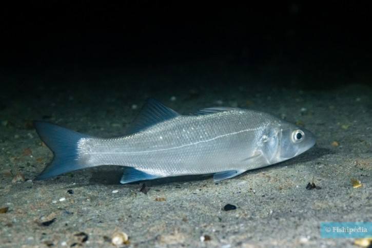

Disentraurchus labrax (Λαβράκι)

Μορφολογία
Έχει υδροδυναμικό, μακρόστενο σώμα με μεγάλο κεφάλι και στόμα, δύο ραχιαία πτερύγια (το πρώτο αγκαθωτό) και ασημί χρώμα με πιο σκούρα ράχη. Τα ενήλικα συνήθως φτάνουν 30–70 cm, αλλά μπορούν να ξεπεράσουν τα 1 m μήκος, με καλή μυϊκή ανάπτυξη που ταιριάζει στο ενεργητικό, αρπακτικό τρόπο ζωής τους.
Πού το συναντάμε
Το λαβράκι είναι ευρύαλο και ευρύθερμο: ζει σε παράκτια θαλάσσια νερά, εκβολές ποταμών, λιμνοθάλασσες και μπορεί να ανεβαίνει σε σχεδόν γλυκά νερά. Συνήθως κινείται από την επιφάνεια έως περίπου 100 m βάθος, προτιμώντας περιοχές με ρεύμα και καλή οξυγόνωση, σε θερμοκρασίες περίπου 5–28 °C και αλατότητες από χαμηλές (3‰) έως κανονικό θαλασσινό νερό.
Διατροφή
Το λαβράκι είναι σαρκοφάγο, τρεφόμενο με γαρίδες, καρκινοειδή, μαλάκια και μικρά ψάρια, ανάλογα με το στάδιο ζωής και το περιβάλλον. Τα νεαρά άτομα μένουν κοντά στις ακτές και τις εκβολές, όπου βρίσκουν άφθονη μικροπανίδα, ενώ τα μεγαλύτερα μετακινούνται και σε πιο βαθιά ή βραχώδη σημεία κυνηγώντας ενεργά τη λεία τους.
Συνθήκες εκτροφής
Στην ιχθυοκαλλιέργεια, το ευρωπαϊκό λαβράκι εκτρέφεται σε θαλάσσιους κλωβούς και συστήματα ανακυκλοφορίας, αξιοποιώντας την αντοχή του σε μεγάλο εύρος θερμοκρασίας και αλατότητας. Βέλτιστες συνθήκες ανάπτυξης περιλαμβάνουν θερμοκρασίες περίπου 18–24 °C, καλή οξυγόνωση, σταθερή ποιότητα νερού και τροφές υψηλής περιεκτικότητας σε πρωτεΐνη και ενέργεια, που επιτρέπουν γρήγορους ρυθμούς αύξησης.